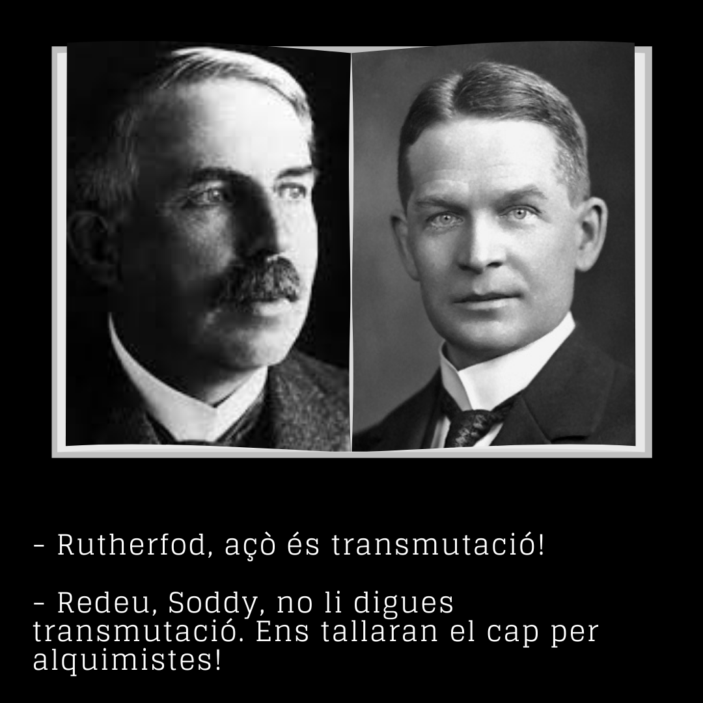

Una reacció nuclear es un procés en el qual un nucli es colpejat per un altre o per un projectil més simple com un protó, un neutró o un electró, i com a resultat de la interacció s’obtenen nuclis diferents.
Primera reacció nuclear realitzada per Rutherford: \(_{2}^{4}\textrm{He}+_{7}^{14}\textrm{N}\rightarrow _{8}^{17}\textrm{O}+_{1}^{1}\textrm{H}\)
Fent un balanç d’energia podem comprovar si les reaccions es produiran o no.

Radioactivitat natural i artificial
- Radioactivitat natural: Els nuclis inestables tendeixen a emetre radiacions espontàniament per a aconseguir estabilitat.
- Radioactivitat artificial: És produeix quan es bombardegen certs nuclis estables amb les partícules apropiades. Aquestes partícules penetren al nucli tornant-lo inestable, i aleshores, emeten radiacions per a tornar-se estables.
Reaccions de Fusió i Fissió nuclear
-
- La fissió nuclear
-
Consisteix en el trencament d’un nucli massiu en dos nuclis de massa comparable i el consegüent alliberament d’energia. Aquest procés es pot provocar artificialment mitjançant una desestabilització nuclear produïda per la captura de neutrons.
\(_{92}^{235}\textrm{U}+_{0}^{1}\textrm{n}\rightarrow _{92}^{236}\textrm{U}\rightarrow _{37}^{93}\textrm{Rb}+_{55}^{141}\textrm{Cs}+2_{0}^{1}\textrm{n}\)
Els nous neutrons són capturats per un nou nucli d’urani-235 produint una reacció en cadena.
Es desprèn energia perquè els nuclis més pesats, com el 235U, són menys estables, perquè tenen menor energia d’enllaç per nucleó i alliberen energia si es divideixen en altres més lleugers amb major energia d’enllaç per nucleó.
- La fusió nuclear
-
Consisteix en la unió de dos nuclis de àtoms lleugers per a formar un més pesat, amb el consegüent alliberament d’energia.
\(_{1}^{2}\textrm{H}+_{1}^{3}\textrm{H}\rightarrow _{2}^{4}\textrm{He}+_{0}^{1}\textrm{n}\)
El despreniment d’energia es deu a l’augment de l'estabilitat dels nuclis d’elements lleugers a mesura que augmenta el número màssic.
Energia de desintegració (factor Q)
És la variació de l’energia cinètica de les partícules que intervenen en una reacció nuclear equivalent a la disminució de l’energia associada a la massa en repós (diferència entre les masses de les partícules del primer membre de l'equació i les del segon).
\(Q=E_{Cf}-E_{C0}=(m_0-m_f)\cdot c^2\)
- Si Q>0, la reacció és exoenergètica i ocorre per a tots els valors de l’energia cinètica de la partícula incident.
- Si Q<0, la reacció és endoenergètica i la partícula incident ha de tindre com a mínim una energia cinètica igual al factor Q per a poder produir la reacció. Aquesta energia s’anomena energia cinètica llindar.
Famílies radioactives
Una sèrie radioactiva està formada per un conjunt de nuclis radioactius naturals que procedeix d’un mateix nucli inicial i que, per desintegracions successives, acaben en un mateix nucli estable.
En la natura existeixen tres series radioactives naturals: la del tori-232, la del urani-238 i la del urani-235, les tres acaben en isòtops estables del plom.
En una sèrie radioactiva, els nuclis dels elements que la formen poden assolir un estat estacionari o equilibri radioactiu en el que l’activitat de cadascun d’ells es constant: λ1·N1=λ2·N2= …